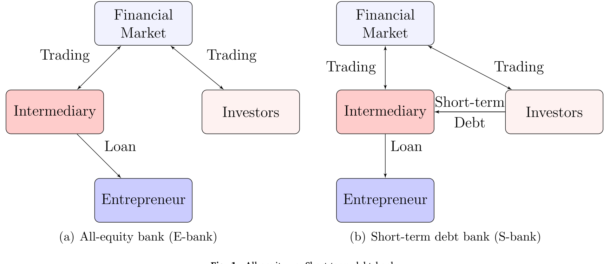
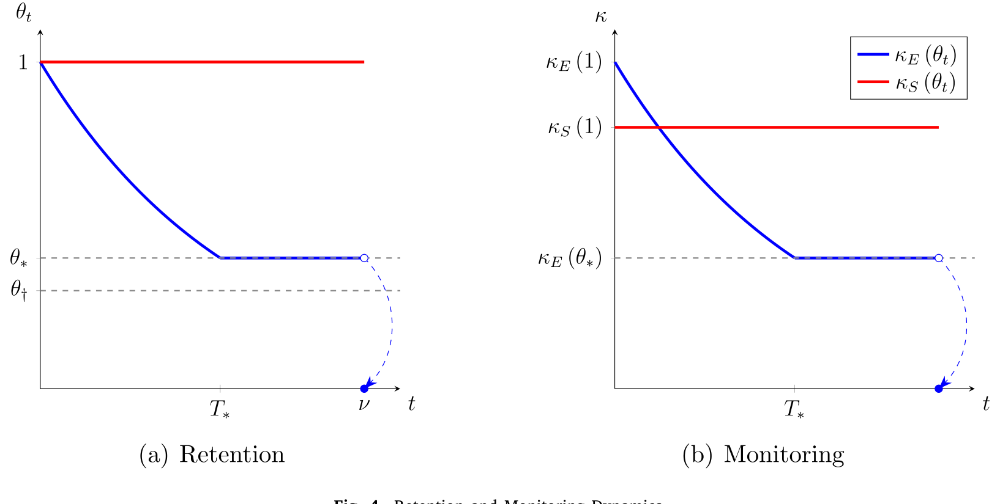
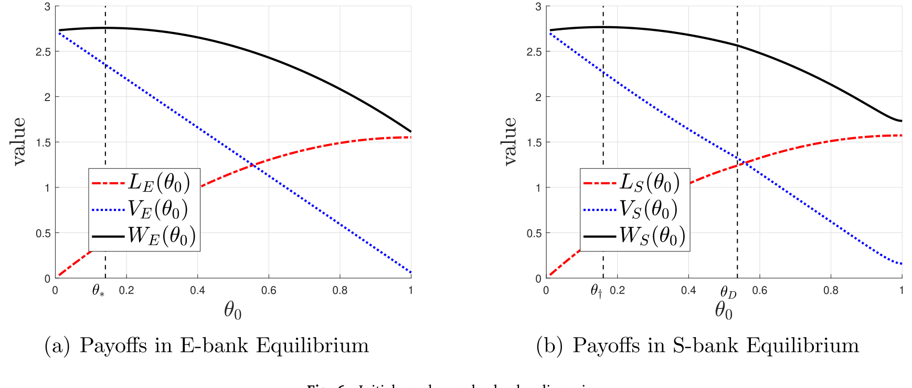
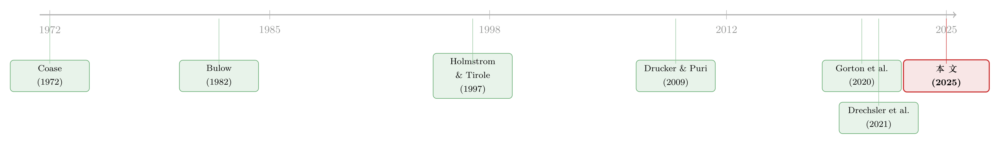

中间商管不住自己的手——为什么「短债」反而治好了银行的食言
本文读的是 Hu & Varas (2025, Journal of Financial Economics)：当银行无法承诺「把贷款留在自己账上」时，全股权银行会像一个杜邦特卖场一样，把贷款一点点地卖出去、监督也一路滑坡；而短期债务因为要不断重新定价，会逼银行把卖贷款的代价立刻吃进自己嘴里，从而内生地修好了这个「食言」问题。一句话：短债不是麻烦，短债是承诺。
1 引言：一个「管不住自己」的中间商
我们先讲一个金融学里非常古老、却始终没被讲透的紧张关系。
金融中介——银行——之所以有价值，是因为它能做一件投资者做不了的事：监督 (monitoring)。它盯着借款企业，压住企业主的道德风险，让一个本来「不可信」的项目变得可融资。这是 Holmstrom and Tirole (1997) 那篇经典里最核心的洞见：要让银行有动力去监督，它必须在自己账上留下足够的贷款份额，也就是所谓的「风险共担 (skin in the game)」。留得越多，银行越心疼，越会用力盯。
到这里都很顺。但接着，一个自然的问题是：谁来保证银行真的把贷款留住？
现实里并没有人拿枪逼着银行不卖。二级贷款市场 (secondary loan market) 越来越发达，银行随时可以把手里的贷款转手卖掉（Drucker and Puri, 2009）。也就是说，银行对「留存」这件事没有承诺能力 (no commitment)。它今天可以信誓旦旦说「我会一直盯着」，明天市场一开，它就把贷款悄悄出掉一块。
这就是本文的全部张力所在。Hu and Varas (2025) 问的问题极其干净：
当中介无法承诺自己的留存比例时，贷款出售与监督会演化成什么样子？而短期债务，能不能反过来替它把这个承诺补上？
把它和我们之前读过的《承诺去交易：为什么「先卖给中间商」反而能治好柠檬市场》放在一起看会很有意思——那篇讲的是中介如何用「承诺去买」来解决逆向选择；这篇讲的是中介如何用「短债」来给自己强加一个本来给不出的承诺。两篇都在追问同一件事：中介的可信度从哪里来。
2 一个被反复讲透的核心：Coase 的旧梦
在进入模型之前，作者点出了一个让我拍案的类比，而整篇文章其实就是把这一个类比讲到底。
设想银行手里这一笔贷款，就是一件耐用品 (durable good)；而银行，就是这件耐用品唯一的卖家——一个垄断者 (monopolist)。这正是 Coase (1972) 那个著名的「耐用品垄断 (durable-goods monopoly)」难题：
垄断者想高价卖货，但只要它今天没把货全卖完，明天它就有动力降价再卖一点。理性的买家预见到这一点，今天就不肯出高价。结果是——这就是著名的 Coase 猜想——一个能持续降价的耐用品垄断者，最终会把价格压到边际成本，一点垄断租都赚不到。让他赚不到钱的，不是别人，正是「明天的自己」。
把这个故事翻译回银行：贷款的「价格」由银行未来的监督强度决定。银行今天想守住高监督、高价格，但只要市场明天还开着，它就有动力再卖一块、少盯一点。理性的贷款买家预见到这一点，今天买贷款时就会压价。于是——
核心机制（请记住这一句）：全股权银行卖不出垄断租，因为它对「未来不稀释投资者」给不出承诺；它每卖一小块，留存就更少，监督的动力就更弱，于是被迫继续卖——一路滑到底。这是一个时间不一致 (time-inconsistency) 问题。
那 Coase 的世界里，垄断者有没有出路？有。Bulow (1982) 给出了答案：别卖，去租 (leasing)。租赁意味着货物的所有权始终在垄断者手里，他每期重新收租，因此会内部化自己「砸价」的全部后果，垄断租就保住了。
本文最漂亮的一步，就是指出：短期债务，就是银行版的「租赁」。 这正是我们要一步步讲透的那个反转。

Figure 1: All-equity vs. Short-term debt bank
如图 1 所示，左边是全股权银行（E-bank）：它用自有资金和投资者的钱并排贷给企业；右边是短期债银行（S-bank）：投资者的钱先借给银行，银行再把自有资金和借来的钱一起贷出去。结构上只差一层，结果却天壤之别。
3 一个两期例子：把机制掰开揉碎
作者很贴心，先用一个三期（\(t=1,2,3\)）的小例子把直觉讲清楚。我们跟着走一遍——这一节是全文的骨架。
设定：一个企业、一家银行、一群竞争性投资者。所有人风险中性、有限责任。投资者不贴现未来，企业和银行把下一期的收益按 \(\delta<1\) 贴现。项目在 \(t=3\) 成熟，企业努力则以概率 \(p_H=1\) 产出 \(R\)，偷懒则 \(p_L=0\)。偷懒的「高选项」带来私人收益 \(B>0\)。在 \(t=3\) 企业选择努力之前，银行可以监督，花一个私人成本 \(\tilde\kappa\) 消灭掉高偷懒选项；这个成本服从 \([0,\bar\kappa]\) 上的均匀分布。把贷款总份额归一化为 1，记 \(\theta_t\) 为银行在 \(t\) 期末留下的份额。
3.1 全股权银行：一路下滑
用倒推法。在 \(t=3\)，给定监督成本实现值 \(\kappa\)，银行监督的激励相容 (incentive compatibility, IC) 条件，以及由此得到的监督概率是：
$$ \kappa \le \theta_2 R \;\Rightarrow\; p_2(\theta_2) = \frac{\theta_2 R}{\bar\kappa}. $$
直觉很清楚：银行留的份额 \(\theta_2\) 越大，它越愿意承担监督成本，监督概率越高。
在 \(t=2\)，E-bank 选择卖出多少（\(\theta_1-\theta_2\)）来最大化它的期望收益：
$$ \Pi_2^E(\theta_1) = \max_{\theta_2\in[0,1]}\; \delta\!\left(p_2(\theta_2)\theta_2 R - \int_0^{\theta_2 R}\frac{\kappa}{\bar\kappa}\,d\kappa\right) + q_2(\theta_2)(\theta_1-\theta_2), $$
其中贷款价格 \(q_2(\theta_2)=p_2(\theta_2)R\)——价格本身就内嵌了银行未来的监督概率。解出来的结果是这篇文章的第一个「钩子」：
$$ \theta_2 = \frac{\theta_1}{2-\delta} < \theta_1. $$
也就是说，只要市场一开，银行就一定会卖掉一块（\(\theta_2<\theta_1\)）。为什么？因为卖第一小块时，监督只略微下降，初始的价格冲击微乎其微，所以卖一点总是划算的；可一旦卖了，剩下的留存更小，下一步卖出去的诱惑反而更大。这就是 Coase 滑坡。
往前推到 \(t=1\)，可以算出 E-bank 的最终期望收益是
$$ \Pi_1^E(\theta_0) = \frac{R^2}{2\bar\kappa}\cdot\frac{\theta_0^2}{(2-\delta)^2}. $$
注意那个 \((2-\delta)^2\)——平方，意味着两期的稀释损失被复利式地吃掉了。
3.2 短期债银行：被「重新定价」拴住的手
现在轮到 S-bank。它能在 \(t=1,2\) 发行一期债 \(D_1,D_2\)。它的监督 IC 变成：
$$ \kappa \le \theta_2 R - D_2 \;\Rightarrow\; p_2(\theta_2,D_2) = \frac{\theta_2 R - D_2}{\bar\kappa}. $$
关键的转折发生在两个不同的时点，对比极其鲜明：
在 \(t=2\)，卖贷款和发债是等价的。 因为 \(t=2\) 之后市场不再开张，没有进一步稀释投资者的机会，承诺问题根本不存在。此时 \(\Pi_2^S(\theta_1)=\Pi_2^E(\theta_1)\)。这印证了一个静态直觉：在一次性的世界里，卖贷款和发债不过是减少 skin in the game 的两种等价手段。
但真正关键的一步在于 \(t=1\)。 这里等价性崩塌了。S-bank 在 \(t=1\) 的问题是：
约束是 \(D_1 \le \Pi_2^S(\theta_1)\)。求解的结论是这篇论文的灵魂：
$$ \theta_1 = \theta_0,\qquad D_1 = \Pi_2^S(\theta_1). $$
银行选择一块贷款都不卖，而是把短期债借到顶。 于是它的收益变成
$$ \Pi_1^S(\theta_0) = \frac{R^2}{2\bar\kappa}\cdot\frac{\theta_0^2}{2-\delta} \;>\; \Pi_1^E(\theta_0). $$
请把它和 E-bank 的 \(\Pi_1^E\) 并排放：分母从 \((2-\delta)^2\) 变成了 \((2-\delta)\)。因为 \(2-\delta>1\)，短期债银行严格地赚得更多。
为什么会这样？这是全文最该被讲透的地方。因为 \(t=1\) 的债主和 \(t=1\) 的贷款买家，担心的东西完全不同。
- 你若在 \(t=1\) 向人卖贷款，买家很清楚：\(t=2\) 市场还会开，那时银行又会稀释他、少监督。于是他今天就压价（\(q_1
- 你若在 \(t=1\) 发短债，债主根本不在乎银行 \(t=2\) 干什么——因为他会在银行下一轮动作之前就被优先足额偿付。所以短债是「干净」的，不打折。
更要命的是动态里的「重新定价」：短期债必须不断地滚动 (roll over)。一旦银行试图卖贷款、降低监督，下一次再融资时利率立刻飙升——这等于给「卖贷款」这个动作即时上了一道惩罚。于是银行虽然在合同上没有任何留存承诺，却发现守住整笔贷款才是最优的。短债，就是那个让垄断者「只租不卖」的租约。
4 连续时间模型：把直觉做成定理
两期例子讲清了直觉，但它撑不起完整的刻画——把离散模型推到两期以上会变得无法处理。于是作者搬到连续时间，把同一个故事做成可解的动态博弈（一个 Markov 完美均衡）。
时间 \(t\in[0,\infty)\)，项目在随机时刻 \(\tau\)（强度为 \(\phi\) 的泊松事件）成熟。企业努力成功概率 \(p_H\)，偷懒则降为 \(p_L=p_H-\Delta\)。银行的留存 \(\theta_t\) 是状态变量，也就是它的 skin in the game，公开可观测。
监督的 IC 条件在两种制度下分别是（这是连续模型里那对最关键的不等式）：
$$ \text{E-bank:}\quad \kappa \le \kappa_E := \Delta R_o\,\theta, \qquad \text{S-bank:}\quad \kappa \le \kappa_S := \Delta\big(R_o\,\theta - D\big). $$
其中 \(R_o=R-b/\Delta\) 是付给外部债权人的部分，\(\Delta:=p_H-p_L\)。
贷款价格在竞争市场里等于其预期现值：
$$ q(\theta,D)=\mathbb{E}\!\left[\,d(\theta_\tau,D_\tau)\,\middle|\,\theta_t=\theta,\,D_t=D\right],\qquad d(\theta,D)=p(\theta,D)R_o. $$
注意这个期望是沿着均衡路径 \(\{\theta_s,D_s\}\) 取的——也就是说，今天的价格已经把银行未来要卖多少、要监督多少，全部预期进去了。这正是价格冲击的来源。
E-bank 在项目成熟时拿到贷款支付、净掉监督成本：
$$ \pi_E(\theta)=p_E(\theta)R_o\,\theta - \int_0^{\kappa_E}\kappa\,dF(\kappa),\qquad p_E(\theta)=p_L+F(\kappa_E)\Delta. $$
由包络定理 (Envelope Theorem) 可以得到一个干净得出奇的结果：
$$ \pi_E'(\theta)=p_E(\theta)R_o = d_E(\theta). $$
监督成本那一项的边际影响恰好被 IC 边界处的条件抹掉了（因为在 \(\kappa_E\) 处银行恰好对监督与否无差异），于是边际价值就等于每股的支付 \(d_E(\theta)\)。这个等式后面用来刻画银行的最优交易策略。
均衡的定性结论与两期例子完全一致：
- E-bank：因为承诺缺失叠加监督外部性 (monitoring externality)——监督的好处投资者也享，成本却由银行独扛，典型的搭便车 (free-rider) 问题——它会平滑地把贷款卖出去，监督强度随时间单调下降。
- S-bank：短期债的即时重新定价把这个外部性内部化了。银行任何想卖贷款的企图都会立刻反映在短债利率上，于是它选择守住整笔贷款、维持监督。

Figure 4: Retention and Monitoring Dynamics
如图 4 所示，左边是留存 \(\theta_t\) 的路径，右边是监督强度：E-bank 一路下滑，S-bank 维持在高位。这张图就是 Coase 滑坡与 Bulow 租约的可视化对照。
这个机制有一个不能省的前提：短债必须暴露在信用风险下，并被市场公平定价。作者明确指出——如果银行发的是无风险短债，或者它的有风险短债没有被公平定价，那么 S-bank 的行为会退化得和 E-bank 一模一样。同样地，如果银行发的是长期债 (long-term debt)，因为缺了「不断重新定价」这个机制，它也会像 E-bank 一样慢慢卖光贷款。换句话说，治病的不是「债」本身，而是「短」——是那个高频重定价的环节。
这个推论有现实意味。作者提到，近期监管（FDIC）在区域银行危机后提议要求某些存款机构持有长期债；而本文的逻辑暗示，这样的改革反而可能加剧承诺问题、削弱银行的监督动机。关于长期低利率如何把资金推向高频滚动的短债与影子银行，可参见《利率长跌二十年，如何亲手喂大了影子银行》。
5 当贷款人变得分散
作者还做了一个我很喜欢的延伸：如果投资者不是铁板一块，而是分散 (dispersed) 的呢？
直觉上，贷款人越分散，单个投资者越无力约束银行，搭便车问题越严重，监督外部性越大。这恰恰放大了 S-bank 相对 E-bank 的优势——短债把分散投资者本来各自为战的约束，汇总成了一个统一的、即时的利率信号。

Figure 6: Initial surplus under lender dispersion
如图 6 所示，随着贷款人分散度上升，短债结构带来的初始剩余 (initial surplus) 相对优势是扩大的。这把「短债=承诺」的故事，从单一投资者推广到了真实世界里那种「一大群人各持一小块」的银团贷款 (loan syndication) 场景。
6 文献脉络
把这条线索捋一遍，会发现这篇文章站在三股潮流的交汇点上。
第一股，是金融中介与监督。 Holmstrom and Tirole (1997) 奠定了「银行靠留存换监督可信度」的框架——这是本文的出发点和靶子。本文做的，是把那个框架里默认银行能承诺留存的假设拿掉。
第二股，是耐用品垄断与承诺。 Coase (1972) 提出垄断者卖耐用品会自我砸价、赚不到租；Bulow (1982) 指出「租而不卖」能救回承诺。本文最深的洞见，就是把银行的贷款出售问题精确地映射成 Coase 难题，再把短期债精确地映射成 Bulow 的租约。这个类比不是装饰，而是全文的引擎。
第三股，是短期债务与金融脆弱性。 Drucker and Puri (2009) 用证据说明二级贷款市场让留存承诺变得有限；Gorton et al. (2020) 记录了危机中银行短债融资被冻结的情形；Drechsler et al. (2021) 则论证存款其实更像长期债。本文给「中介为什么偏爱短债」提供了一个全新的、正面的理由——不是因为短债便宜或方便，而是因为它的不断重新定价本身就是一种承诺技术。

这条「用结构给银行强加承诺」的思路，和《规则还是相机抉择？——给银行资本监管装上一根「承诺」的缰绳》是同源的关切：前者靠监管规则锁住银行，本文则发现市场化的短债能内生地起到类似作用。
7 评论与延伸（Q&A + 研究方向）
(a) 几个可能的疑问
Q：短债不是公认的「脆弱性之源」吗？这篇怎么把它说成好东西？
两件事并不矛盾。本文恰恰是在「短债被公平定价」的前提下，论证它的激励好处：高频重定价让银行内部化卖贷款的代价。但作者自己也强调，一旦短债市场冻结、定价失灵（Gorton et al., 2020 记录的那种情形），这套机制立刻失效，S-bank 退化成 E-bank。所以本文不是替短债翻案，而是把它的「激励收益」和「挤兑风险」分到了天平的两端。
Q：长债和短债到底差在哪？不都是债吗？
差在「重新定价的频率」。长债在发行时一次性定价，之后银行再卖贷款、再稀释，债主已经无法用利率惩罚它了——所以长债银行会和全股权银行一样慢慢卖光。短债则必须不断滚动，每一次滚动都是一次重新定价，等于把「未来不稀释」的承诺切成无数小份、逐期兑现。是「短」而非「债」在起作用。
Q：这和 Diamond-Dybvig 那种「短债导致挤兑」的逻辑是一回事吗？
不是。挤兑文献里短债的作用是流动性转换与协调失败；本文里短债的作用是激励——通过即时重定价解决一个动态博弈中的时间不一致问题。本文的短债甚至不需要「可赎回」这个性质，它需要的是「被信用风险敏感地、公平地定价」。
Q：模型把承诺设成「完全没有」，是不是太极端？现实里银行多少有点声誉约束。
这是一个合理的担忧。本文取的是「零承诺」这个干净的极端，好处是把机制讲透——结论是即便完全没有合同承诺，短债结构也能内生出承诺。现实里若叠加声誉，方向应当一致、程度会缓和。把声誉博弈和短债重定价放在同一个模型里比较，是一个自然的后续。
Q：为什么 \(t=2\) 卖贷款和发债等价，\(t=1\) 却不等价？
因为承诺问题只在「未来还有稀释机会」时才存在。\(t=2\) 之后市场关张，没有未来可稀释，于是两种减仓手段无差异（这是静态直觉）。\(t=1\) 时未来市场还会开，贷款买家会因预期被稀释而压价，而短债债主因为会被优先早偿则不在乎——等价性正是在这个「动态 vs 静态」的缝隙里崩掉的。
Q：这套理论能不能搬到公司债 / 信用市场？
部分能。本文的「中介=耐用品垄断者」框架本质上是任何「持有可交易信用资产、且其价值依赖于持有人努力」的场景。CLO 管理人、债券基金、做市商持有的库存，都可能适用。难点在于：现实中这些主体的「监督」是否像模型里那样直接进入资产现金流的概率，需要因场景而辩。
(b) 几个可能的研究问题与提案
1. 短债重定价机制的实证检验：贷款出售 vs. 银行融资结构
【经济故事】本文预测，更依赖短期批发融资（如回购、商业票据）的银行，应当更少在二级市场卖出其牵头的银团贷款、并维持更高的监督质量；依赖长期债或保险存款的银行则相反。 【可行性】中。数据上可用 DealScan（银团贷款牵头行与份额变动）+ 银行的融资结构（Call Reports / FR Y-9C）。识别难点在于融资结构内生，可考虑用货币基金改革、回购市场冲击等做工具变量。是个 doable 但需要下功夫处理内生性的题。
2. 长债监管要求的反事实：FDIC 长债提案会削弱监督吗？
【经济故事】本文逻辑直接预言：强制银行持有长期债，因为切断了重定价机制，可能降低其贷款监督动机。这与监管「长债增强稳健性」的初衷相反。 【可行性】中。可围绕 FDIC / 巴塞尔的 TLAC、长债要求做政策评估，比较受约束与不受约束机构在贷款表现、出售行为上的差异。难点是政策较新、样本短，且与资本要求同时变动，需小心剥离。
3. 外资持有人与中介承诺：当贷款卖给了对监督不敏感的买家
【经济故事】如果二级市场的边际买家是对借款人监督不敏感的外资或被动型投资者，本文的价格冲击会减弱，银行的卖出滑坡会更陡。外资持有比例的上升，可能系统性地侵蚀中介的监督承诺。 【可行性】中偏低。需要贷款 / 债券层面的持有人身份数据（如 eMAXX 之于公司债、贷款层面的 CLO 持仓），把「买家类型」与后续违约 / 评级下调挂钩。识别外资份额的外生变动较难，可借助指数纳入等准自然实验。
4. 短债与流动性：重定价机制在压力期的失灵
【经济故事】本文承诺机制依赖短债被「公平定价」。当流动性枯竭、短债无法公平定价时，机制失效。这给出了一个可检验的横截面预测：在流动性冲击期间，原本靠短债维持监督的银行，监督质量的下滑应当更剧烈。 【可行性】中。可用 2008、2020 等流动性冲击窗口做事件研究，比较冲击前短债依赖度不同的银行，其贷款表现的差异化恶化。数据可得，关键是构造干净的「短债依赖度」与「监督质量」代理变量。
8 我的判断
这篇文章最让我服气的，是它的经济学品味：它没有引入任何花哨的新摩擦，只是把两个老到不能再老的东西——Holmstrom-Tirole 的监督留存、Coase-Bulow 的耐用品垄断——以一种「本该如此」的方式焊在了一起，然后顺手给「中介为什么偏爱短债」这个老问题提供了一个全新的、激励层面的答案。两期例子和连续时间模型一前一后，直觉与严谨都给到位了。\((2-\delta)\) 与 \((2-\delta)^2\) 那个分母上的对比，是我读过的最优雅的「承诺价值」刻画之一。
对识别——准确说是对理论假设的稳健性——我有两点保留。其一，整个机制悬于「短债被公平定价」这根弦上，而现实中短债定价恰恰在最需要它的时候（危机）最不公平。本文把这一点诚实地写了出来，但这也意味着该理论的政策含义是双刃的：它既论证了短债的激励美德，又内含了它在压力下的崩溃，二者孰轻孰重是一个量化问题，模型本身回答不了。其二，「零承诺」这个极端设定虽然干净，却把声誉、关系型贷款这些现实中真实存在的承诺渠道一笔勾销了；当这些渠道与短债重定价并存且可能互相替代时，短债的边际贡献还剩多少，是个开放问题。
我接下来最想看到的，是有人把这套理论拉到数据里去：用银团贷款的份额变动、配上银行的融资期限结构，去检验那个核心预测——越依赖短债的中介，越舍不得卖贷款、监督也越扎实。如果这个横截面关系在数据里站得住，那这篇优雅的理论就不只是一个漂亮的类比，而是一条真实运转的市场纪律。
参考文献
- Bulow, J., 1982. Durable-goods monopolists. Journal of Political Economy 90(2), 314–332.
- Coase, R.H., 1972. Durability and monopoly. Journal of Law and Economics 15(1), 143–149.
- Drechsler, I., Savov, A., Schnabl, P., 2021. Banking on deposits: maturity transformation without interest rate risk. Journal of Finance 76(3), 1091–1143.
- Drucker, S., Puri, M., 2009. On loan sales, loan contracting, and lending relationships. Review of Financial Studies 22(7), 2835–2872.
- Gorton, G., Metrick, A., Xie, L., 2020. The flight from maturity. Journal of Financial Intermediation 47.
- Holmstrom, B., Tirole, J., 1997. Financial intermediation, loanable funds, and the real sector. Quarterly Journal of Economics 112(3), 663–691.
- Hu, Y., Varas, F., 2025. Intermediary financing without commitment. Journal of Financial Economics 167, 104025.